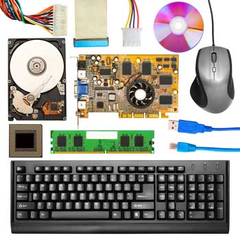

Hardware represents the physical and tangible components of a computer, i.e. the components that can be seen and touched.
Examples of Hardware are the following
Input devices − keyboard, mouse, etc.
Output devices − printer, monitor, etc.
Secondary storage devices − Hard disk, CD, DVD, etc.
Internal components − CPU, motherboard, RAM, etc.

Computer Hardware Parts
Some of the commonly used hardware in your computer are described below:
Motherboard
Monitor
Keyboard
Mouse
1) Motherboard:
The motherboard is generally a thin circuit board that holds together almost all parts of a computer except input and output devices. All crucial hardware like CPU, memory, hard drive, and ports for input and output devices are located on the motherboard. It is the biggest circuit board in a computer chassis.
It allocates power to all hardware located on it and enables them to communicate with each other. It is meant to hold the computer's microprocessor chip and let other components connect to it. Each component that runs the computer or improves its performance is a part of the motherboard or connected to it through a slot or port.
There can be different types of motherboards based on the type and size of the computers. So, a specific motherboard can work only with specific types of processors and memory.
2) Monitor:
A monitor is the display unit of a computer on which the processed data, such as text, images, etc., is displayed. It comprises a screen circuity and the case which encloses this circuity. The monitor is also known as a visual display unit (VDU).
3) Keyboard
It is the most important input device of a computer. It is designed to allow you input text, characters, and other commands into a computer, desktop, tablet, etc. It comes with different sets of keys to enter numbers, characters, and perform various other functions like copy, paste, delete, enter, etc.
A keyboards is an input device through which users can input text, numbers, and special characters. It is an input device with a typical QWERTY keyset. It is an external hardware device that is connected to the computer. It serves as the user's most fundamental interface with a system. It has numerous buttons that can be used to generate letters, numbers, and symbols as well as unique keys like the Windows and Alt keys that can also accomplish other tasks.